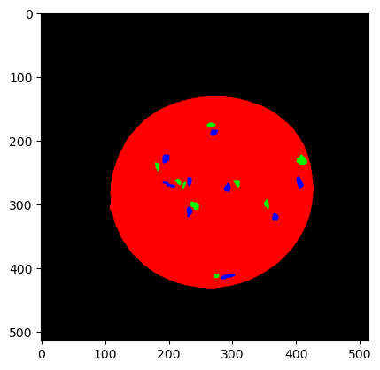

import glob
import numpy as np
import os
import scipy.io as sio
import numpy as np
from scipy import misc
import sys
sys.path.insert(1, '/Users/Owner/Downloads/salami/')pip install nbconvertCollecting nbconvert
Downloading nbconvert-7.3.1-py3-none-any.whl (284 kB)
-------------------------------------- 284.1/284.1 KB 4.4 MB/s eta 0:00:00
Collecting defusedxml
Downloading defusedxml-0.7.1-py2.py3-none-any.whl (25 kB)
Collecting beautifulsoup4
Downloading beautifulsoup4-4.12.2-py3-none-any.whl (142 kB)
-------------------------------------- 143.0/143.0 KB 8.3 MB/s eta 0:00:00
Collecting mistune<3,>=2.0.3
Downloading mistune-2.0.5-py2.py3-none-any.whl (24 kB)
Collecting jinja2>=3.0
Downloading Jinja2-3.1.2-py3-none-any.whl (133 kB)
---------------------------------------- 133.1/133.1 KB ? eta 0:00:00
Collecting markupsafe>=2.0
Downloading MarkupSafe-2.1.2-cp310-cp310-win_amd64.whl (16 kB)
Requirement already satisfied: pygments>=2.4.1 in c:\users\owner\appdata\local\programs\python\python310\lib\site-packages (from nbconvert) (2.12.0)
Collecting nbclient>=0.5.0
Downloading nbclient-0.7.4-py3-none-any.whl (73 kB)
---------------------------------------- 73.1/73.1 KB 3.9 MB/s eta 0:00:00
Collecting pandocfilters>=1.4.1
Downloading pandocfilters-1.5.0-py2.py3-none-any.whl (8.7 kB)
Collecting nbformat>=5.1
Downloading nbformat-5.8.0-py3-none-any.whl (77 kB)
---------------------------------------- 77.4/77.4 KB ? eta 0:00:00
Collecting jupyterlab-pygments
Downloading jupyterlab_pygments-0.2.2-py2.py3-none-any.whl (21 kB)
Requirement already satisfied: jupyter-core>=4.7 in c:\users\owner\appdata\local\programs\python\python310\lib\site-packages (from nbconvert) (4.10.0)
Requirement already satisfied: traitlets>=5.0 in c:\users\owner\appdata\local\programs\python\python310\lib\site-packages (from nbconvert) (5.1.1)
Collecting tinycss2
Downloading tinycss2-1.2.1-py3-none-any.whl (21 kB)
Collecting bleach
Downloading bleach-6.0.0-py3-none-any.whl (162 kB)
-------------------------------------- 162.5/162.5 KB 9.5 MB/s eta 0:00:00
Requirement already satisfied: packaging in c:\users\owner\appdata\local\programs\python\python310\lib\site-packages (from nbconvert) (21.3)
Requirement already satisfied: pywin32>=1.0 in c:\users\owner\appdata\local\programs\python\python310\lib\site-packages (from jupyter-core>=4.7->nbconvert) (304)
Collecting traitlets>=5.0
Downloading traitlets-5.9.0-py3-none-any.whl (117 kB)
---------------------------------------- 117.4/117.4 KB ? eta 0:00:00
Collecting jupyter-core>=4.7
Downloading jupyter_core-5.3.0-py3-none-any.whl (93 kB)
---------------------------------------- 93.2/93.2 KB ? eta 0:00:00
Requirement already satisfied: jupyter-client>=6.1.12 in c:\users\owner\appdata\local\programs\python\python310\lib\site-packages (from nbclient>=0.5.0->nbconvert) (7.3.0)
Collecting platformdirs>=2.5
Downloading platformdirs-3.5.0-py3-none-any.whl (15 kB)
Collecting fastjsonschema
Downloading fastjsonschema-2.16.3-py3-none-any.whl (23 kB)
Collecting jsonschema>=2.6
Downloading jsonschema-4.17.3-py3-none-any.whl (90 kB)
---------------------------------------- 90.4/90.4 KB 5.0 MB/s eta 0:00:00
Collecting soupsieve>1.2
Downloading soupsieve-2.4.1-py3-none-any.whl (36 kB)
Collecting webencodings
Downloading webencodings-0.5.1-py2.py3-none-any.whl (11 kB)
Requirement already satisfied: six>=1.9.0 in c:\users\owner\appdata\local\programs\python\python310\lib\site-packages (from bleach->nbconvert) (1.16.0)
Requirement already satisfied: pyparsing!=3.0.5,>=2.0.2 in c:\users\owner\appdata\local\programs\python\python310\lib\site-packages (from packaging->nbconvert) (3.0.8)
Collecting attrs>=17.4.0
Downloading attrs-23.1.0-py3-none-any.whl (61 kB)
---------------------------------------- 61.2/61.2 KB 3.2 MB/s eta 0:00:00
Collecting pyrsistent!=0.17.0,!=0.17.1,!=0.17.2,>=0.14.0
Downloading pyrsistent-0.19.3-cp310-cp310-win_amd64.whl (62 kB)
---------------------------------------- 62.7/62.7 KB 3.3 MB/s eta 0:00:00
Requirement already satisfied: python-dateutil>=2.8.2 in c:\users\owner\appdata\local\programs\python\python310\lib\site-packages (from jupyter-client>=6.1.12->nbclient>=0.5.0->nbconvert) (2.8.2)
Requirement already satisfied: entrypoints in c:\users\owner\appdata\local\programs\python\python310\lib\site-packages (from jupyter-client>=6.1.12->nbclient>=0.5.0->nbconvert) (0.4)
Requirement already satisfied: nest-asyncio>=1.5.4 in c:\users\owner\appdata\local\programs\python\python310\lib\site-packages (from jupyter-client>=6.1.12->nbclient>=0.5.0->nbconvert) (1.5.5)
Requirement already satisfied: tornado>=6.0 in c:\users\owner\appdata\local\programs\python\python310\lib\site-packages (from jupyter-client>=6.1.12->nbclient>=0.5.0->nbconvert) (6.1)
Requirement already satisfied: pyzmq>=22.3 in c:\users\owner\appdata\local\programs\python\python310\lib\site-packages (from jupyter-client>=6.1.12->nbclient>=0.5.0->nbconvert) (22.3.0)
Installing collected packages: webencodings, mistune, fastjsonschema, traitlets, tinycss2, soupsieve, pyrsistent, platformdirs, pandocfilters, markupsafe, jupyterlab-pygments, defusedxml, bleach, attrs, jupyter-core, jsonschema, jinja2, beautifulsoup4, nbformat, nbclient, nbconvert
Attempting uninstall: traitlets
Found existing installation: traitlets 5.1.1
Uninstalling traitlets-5.1.1:
Successfully uninstalled traitlets-5.1.1
Attempting uninstall: jupyter-core
Found existing installation: jupyter-core 4.10.0
Uninstalling jupyter-core-4.10.0:
Successfully uninstalled jupyter-core-4.10.0
Successfully installed attrs-23.1.0 beautifulsoup4-4.12.2 bleach-6.0.0 defusedxml-0.7.1 fastjsonschema-2.16.3 jinja2-3.1.2 jsonschema-4.17.3 jupyter-core-5.3.0 jupyterlab-pygments-0.2.2 markupsafe-2.1.2 mistune-2.0.5 nbclient-0.7.4 nbconvert-7.3.1 nbformat-5.8.0 pandocfilters-1.5.0 platformdirs-3.5.0 pyrsistent-0.19.3 soupsieve-2.4.1 tinycss2-1.2.1 traitlets-5.9.0 webencodings-0.5.1
Note: you may need to restart the kernel to use updated packages. WARNING: The scripts jupyter-migrate.exe, jupyter-troubleshoot.exe and jupyter.exe are installed in 'c:\Users\Owner\AppData\Local\Programs\Python\Python310\Scripts' which is not on PATH.
Consider adding this directory to PATH or, if you prefer to suppress this warning, use --no-warn-script-location.
WARNING: The script jsonschema.exe is installed in 'c:\Users\Owner\AppData\Local\Programs\Python\Python310\Scripts' which is not on PATH.
Consider adding this directory to PATH or, if you prefer to suppress this warning, use --no-warn-script-location.
WARNING: The script jupyter-trust.exe is installed in 'c:\Users\Owner\AppData\Local\Programs\Python\Python310\Scripts' which is not on PATH.
Consider adding this directory to PATH or, if you prefer to suppress this warning, use --no-warn-script-location.
WARNING: The script jupyter-execute.exe is installed in 'c:\Users\Owner\AppData\Local\Programs\Python\Python310\Scripts' which is not on PATH.
Consider adding this directory to PATH or, if you prefer to suppress this warning, use --no-warn-script-location.
WARNING: The scripts jupyter-dejavu.exe and jupyter-nbconvert.exe are installed in 'c:\Users\Owner\AppData\Local\Programs\Python\Python310\Scripts' which is not on PATH.
Consider adding this directory to PATH or, if you prefer to suppress this warning, use --no-warn-script-location.
WARNING: You are using pip version 22.0.4; however, version 23.1.2 is available.
You should consider upgrading via the 'c:\Users\Owner\AppData\Local\Programs\Python\Python310\python.exe -m pip install --upgrade pip' command.import helpFunctions as hf
dirIn = "C:\\Users\\Owner\\Downloads\\salami\\"
#Uploading the soreted images by name into an array
multiIm, annotationIm = hf.loadMulti('multispectral_day01.mat' , 'annotation_day01.png', dirIn)- Investigate the data. A manual segmentation has been made of fat and meat in a single image for each day – have a look at day 1. (On DTU Learn code is available for loading data, making histograms, etc.).
Output # multiIm - multispectral image # annotationIm - image with annotation mask of size r x c x 3. Layer 1 is # the salami annotation (both fat and meat, layer 2 is the fat, and # layer 3 is the meat. The pixel value is 1 in the annotation and 0 # elsewhere.
# Extracting the fat and meat from the annotation numpy array
salami = annotationIm[:,:,0]
fat = annotationIm[:,:,1]
meat= annotationIm[:,:,2]
import matplotlib.pyplot as plt
plt.imshow(salami)
plt.show()
print(fat)[[False False False ... False False False]
[False False False ... False False False]
[False False False ... False False False]
...
[False False False ... False False False]
[False False False ... False False False]
[False False False ... False False False]]# Extracting the fat and meat from the annotation numpy array
salami = annotationIm[:,:,0]
fat = annotationIm[:,:,1]
meat= annotationIm[:,:,2]
import matplotlib.pyplot as plt
plt.imshow(annotationIm * 255)
plt.show()
print(multiIm.shape)
plt.imshow(multiIm[:,:,0],cmap="gray")
plt.show()
plt.imshow(fat*255, cmap="gray")
plt.show()
plt.imshow(fat * multiIm[:,:,0], cmap="gray")
plt.show()
rr, cc = np.where(fat)
fat_pix_spec0 = multiIm[rr, cc, :]
rr.shape, cc.shape
fat_pix_spec0.shape
(514, 514, 19)(756, 19)
import helpFunctions as hf
import matplotlib.pyplot as plt
import numpy as np
import imageio as imio
## Example of loading a multi spectral image
multiIm, annotationIm = hf.loadMulti('multispectral_day20.mat' , 'annotation_day20.png', dirIn)
# multiIm is a multi spectral image - the dimensions can be seen by
multiIm.shape
## Show image óf spectral band 7
plt.imshow(multiIm[:,:,6])
plt.show()
## annotationIm is a binary image with 3 layers
annotationIm.shape
## In each layer we have a binary image:
# 0 - background with salami
# 1 fat annotation
# 2 meat annotation
# Here we show the meat annotation
plt.imshow(annotationIm[:,:,2])
plt.show()
## The function getPix extracts the multi spectral pixels from the annotation
# Here is an example with meat- and fat annotation
[fatPix, fatR, fatC] = hf.getPix(multiIm, annotationIm[:,:,1]);
[meatPix, meatR, meatC] = hf.getPix(multiIm, annotationIm[:,:,2]);
# Here we plot the mean values for pixels with meat and fat respectively
plt.plot(np.mean(meatPix,0),'b')
plt.plot(np.mean(fatPix,0),'r')
plt.show()
## The function showHistogram makes a histogram that is returned as a vector
# Here is an example - last argument tells the function to plot the histogram for meat and fat
h = hf.showHistograms(multiIm, annotationIm[:,:,1:3], 2, 1)
## The histogram is also in h
# But not truncated like in the plot. If we wnat to avoid plotting all 256 dimensions,
# we can do like below, and only plot the first 50 values
plt.plot(h[0:50:,:])
plt.show()
## The function setImagePix produces a colour image
# where the pixel coordinates are given as input
# Load RGB image
imRGB = imio.imread(dirIn + 'color_day20.png')
# Pixel coordinates for the fat annotation
[fatPix, fatR, fatC] = hf.getPix(multiIm, annotationIm[:,:,1])
# Concatenate the pixel coordinates to a matrix
pixId = np.stack((fatR, fatC), axis=1)
# Make the new images
rgbOut = hf.setImagePix(imRGB, pixId)
plt.imshow(rgbOut)
plt.show()
C:\Users\Owner\AppData\Local\Temp\ipykernel_9644\888994786.py:66: DeprecationWarning: Starting with ImageIO v3 the behavior of this function will switch to that of iio.v3.imread. To keep the current behavior (and make this warning dissapear) use `import imageio.v2 as imageio` or call `imageio.v2.imread` directly.
imRGB = imio.imread(dirIn + 'color_day20.png')
# Here is an example with meat- and fat annotation
[fatPix, fatR, fatC] = hf.getPix(multiIm, annotationIm[:,:,1]);
[meatPix, meatR, meatC] = hf.getPix(multiIm, annotationIm[:,:,2]);
# Here we plot the mean values for pixels with meat and fat respectively
plt.plot(np.mean(meatPix,0),'b')
plt.plot(np.mean(fatPix,0),'r')
plt.show()
spectrum = np.array([1,2,3,4,5,6,7,8,9,10,11,12,13,14,15,16,17,18,19], dtype = np.int64)
plt.errorbar(spectrum, np.mean(meatPix,0), np.std(meatPix,0), linestyle='None', marker='^')
plt.show()
plt.figure()
plt.errorbar(spectrum, mean_fat, signific*sd_fat, capsize=capsize, ecolor=ecolor[0], label='fat', color=color[0])
plt.errorbar(spectrum ,mean_meat, signific*sd_meat, capsize=capsize, ecolor=ecolor[1], label='meat', color=color[1])
plt.legend()
plt.grid()
plt.xlabel("Wave Band")
plt.ylabel("Mean Intensity")
plt.title(title)
plt.xticks(spectrum)
#if xtick_align: plt.xticks(spectrum)
plt.show()shape = multiIm.shape
shape[2]19waves = []
for i in range(shape[2]):
# Here is an example with meat- and fat annotation
[fatPix, fatR, fatC] = hf.getPix(multiIm, annotationIm[:,:,1]);
[meatPix, meatR, meatC] = hf.getPix(multiIm, annotationIm[:,:,2]);
waves = np.array([1,2,3,4,5,6,7,8,9,10,11,12,13,14,15,16,17,18,19])
error1 = np.std(meatPix,0)
error2 = np.std(fatPix,0)
# Here we plot the mean values for pixels with meat and fat respectively
plt.plot(np.mean(meatPix,0),'b')
plt.plot(np.mean(fatPix,0),'r')
#plt.show()
plt.errorbar(waves, np.mean(meatPix,0), 2*np.std(meatPix,0), fmt = "o", ecolor = 'black' )
plt.errorbar(waves, np.mean(fatPix,0), 2*np.std(fatPix,0), fmt = "o", ecolor = 'black' )
plt.xticks(waves)
plt.show()plt.figure()
plt.errorbar(x=waves, y=np.mean(meatPix,0), yerr=np.std(meatPix,0), ecolor = 'black', capsize = 5, label ='Meat', color = 'red')
plt.errorbar(x=waves, y=np.mean(fatPix,0), yerr=np.std(fatPix,0), ecolor = 'black', capsize = 5, label = 'Fat', color = 'blue')
plt.legend()
plt.xlabel("Spectral Wave")
plt.ylabel("Mean and respective Standard Deviation")
plt.title("Spectral Distribution of Day 1")
plt.xticks(waves)
plt.show()lol = np.mean(meatPix,0)
lol.shape(19,)import numpy as np
import matplotlib.pyplot as plt
import skimage
#spectre = np.array([410, 438, 450, 468, 502, 519, 572, 591, 625, 639, 653, 695, 835, 863, 880, 913, 929, 940, 955])
spectre = np.array([1,2,3,4,5,6,7,8,9,10,11,12,13,14,15,16,17,18,19], dtype = np.int64)
def compare_image(image, day = 1, title="Titel"):
# if np.shape(image1) != np.shape(image2):
# print("Shapes of images mismatch!")
# return None
try:
color_im = skimage.io.imread("color_day" + "0"*(day<10) + str(day) + ".png")
except FileNotFoundError:
print("No image found for day " + str(day))
color_im = np.ones(np.shape(image))
fig, [ax1,ax2] = plt.subplots(1,2, figsize=(8,4))
fig.suptitle(title)
ax1.imshow(color_im)
ax2.imshow(image)
plt.show()
# Here is an example with meat- and fat annotation
[fatPix, fatR, fatC] = hf.getPix(multiIm, annotationIm[:,:,1]);
[meatPix, meatR, meatC] = hf.getPix(multiIm, annotationIm[:,:,2]);
# Here we plot the mean values for pixels with meat and fat respectively
plt.plot(np.mean(meatPix,0),'b')
plt.plot(np.mean(fatPix,0),'r')
plt.show()
# Here is an example - last argument tells the function to plot the histogram for meat and fat
h = hf.showHistograms(multiIm, annotationIm[:,:,1:3], 2, 1)
compare_spectrum(fat_vector_means, fat_vector_sd, meat_vector_means, meat_vector_sd, title = "Mean Intensity of Sausage at Day 1")
def compare_spectrum(mean_fat, sd_fat, mean_meat, sd_meat, signific = 2, ecolor = ["black", "black"], capsize = 5, color = ["orange", "blue"], spectrum = spectre, title = "Titel", xtick_align = False):
plt.figure()
plt.errorbar(spectrum, mean_fat, signific*sd_fat, capsize=capsize, ecolor=ecolor[0], label='fat', color=color[0])
plt.errorbar(spectrum ,mean_meat, signific*sd_meat, capsize=capsize, ecolor=ecolor[1], label='meat', color=color[1])
plt.legend()
plt.grid()
plt.xlabel("Wave Band")
plt.ylabel("Mean Intensity")
plt.title(title)
plt.xticks(spectrum)
#if xtick_align: plt.xticks(spectrum)
plt.show()import helpFunctions as hf
dirIn = "C:\\Users\\Owner\\Downloads\\salami\\"
days = [1,6,13,20,28]
multiImD = []
annotationImD = []
color_imD = []
fat = []
meat = []
nFat = []
nMeat =[]
index_background = []
for d in days:
str_day = "0"*(d<10)+str(d)
imName= ("multispectral_day" + str_day + ".mat")
annotationName = ("annotation_day" + str_day + ".png")
multiIm, annotationIm = hf.loadMulti(imName, annotationName)
multiImD.append(multiIm)
annotationImD.append(annotationIm)
[fatPix, fatR, fatC] = hf.getPix(multiIm, annotationIm[:,:,1])
[meatPix, meatR, meatC] = hf.getPix(multiIm, annotationIm[:,:,2])
fat.append(fatPix)
meat.append(meatPix)
index_background.append((annotationIm[:,:,0]+annotationIm[:,:,1]+annotationIm[:,:,2])==0)
fatM = np.asarray(fat)
meatM = np.asarray(meat)
for i in range(5):
nFat.append(np.size(fatM[i][:,0]))
nMeat.append(np.size(meatM[i][:,0]))C:\Users\Owner\AppData\Local\Temp\ipykernel_9644\2665790727.py:30: VisibleDeprecationWarning: Creating an ndarray from ragged nested sequences (which is a list-or-tuple of lists-or-tuples-or ndarrays with different lengths or shapes) is deprecated. If you meant to do this, you must specify 'dtype=object' when creating the ndarray.
fatM = np.asarray(fat)
C:\Users\Owner\AppData\Local\Temp\ipykernel_9644\2665790727.py:31: VisibleDeprecationWarning: Creating an ndarray from ragged nested sequences (which is a list-or-tuple of lists-or-tuples-or ndarrays with different lengths or shapes) is deprecated. If you meant to do this, you must specify 'dtype=object' when creating the ndarray.
meatM = np.asarray(meat)maskIm = annotationIm[:,:,1]
nMask = maskIm.sum()
clPix = np.zeros([nMask, multiIm.shape[2]])
r, c = np.where(maskIm == 1)
clPix = multiIm[r,c,:]
hf.getPix(multiIm, annotationIm[:,:,1])
[fatPix, fatR, fatC] = hf.getPix(multiIm, annotationIm[:,:,1])fat[0].shape(756, 19)clPix.shape(756, 19)fat_vector.shape(756, 19)# Here is an example with meat- and fat annotation
[fatPix, fatR, fatC] = hf.getPix(multiIm, annotationIm[:,:,1]);
[meatPix, meatR, meatC] = hf.getPix(multiIm, annotationIm[:,:,2]);
maskIm = annotationIm[:,:,1]
nMask = maskIm.sum()
clPix = np.zeros([nMask, multiIm.shape[2]])
clPix = multiIm[r,c,:]
# Here we plot the mean values for pixels with meat and fat respectively
plt.plot(np.mean(meatPix,0),'b')
plt.plot(np.mean(fatPix,0),'r')
plt.show()
plt.figure()
plt.errorbar(spectrum, mean_fat, signific*sd_fat, capsize=capsize, ecolor=ecolor[0], label='fat', color=color[0])
plt.errorbar(spectrum ,mean_meat, signific*sd_meat, capsize=capsize, ecolor=ecolor[1], label='meat', color=color[1])
plt.legend()
plt.grid()
plt.xlabel("Wave Band")
plt.ylabel("Mean Intensity")
plt.title(title)
plt.xticks(spectrum)
#if xtick_align: plt.xticks(spectrum)
plt.show()import numpy as np
import matplotlib.pyplot as plt
from matplotlib.ticker import LinearLocator
import matplotlib.animation as anim
# Opgave 1.2)
mu1 = 175.5; mu2 = 162.9
sigma = 6.7
var = sigma**2
x = np.arange(140,200,0.1)
f1 = 1/(np.sqrt(2*np.pi)*sigma) *np.exp(-1/2 * 1/var * np.power(x-mu1,2))
f2 = 1/(np.sqrt(2*np.pi)*sigma) *np.exp(-1/2 * 1/var * np.power(x-mu2,2))
fig1 = plt.figure()
plt.plot(x,f1, label = "Male")
plt.plot(x,f2, label = "Female")
plt.title("Gaussian Distributions")
plt.xlabel("Height [cm]")
plt.ylabel("Probability Density")
plt.legend()
plt.show()
# opgave 1.3)
fig2 = plt.figure()
male = f1/f2
female = f2/f1
probmale = male/(male+1)
probfemale = female/(female+1)
plt.plot(x,probmale, label = "Male")
plt.plot(x,probfemale, label = "Female")
plt.title(" Distribution Given Height")
plt.xlabel("Height [cm]")
plt.ylabel("Probability Distribution")
plt.ylim([0,1])
plt.legend()
plt.grid()
plt.show()
# Opgave 1.4)
# svaret er (mu1 + mu2)/2
print(f"Critical point: {(mu1+mu2)/2}")
# Opgave 1.5)
ax = plt.figure().add_subplot(projection='3d')
# Make data.
x = np.arange(-5,5,0.05)
x1, x2 = np.meshgrid(x, x)
mu1 = 0; mu2 = 1
sigma1 = 2; sigma2 = 3
var1 = sigma1**2; var2 = sigma2**2
g = 1/(2*np.pi) * 1/(sigma1*sigma2) * np.exp(-1/2 * ( 1/var1*np.power(x1 - mu1,2) + 1/var2*np.power(x2 - mu2,2)))
ax.plot_surface(x1,x2,g, cmap = "gist_ncar", linewidth=0)
plt.show()
# Opgave 1.6)
fig = plt.figure()
ax = fig.add_subplot(projection='3d')
#plt.rcParams['text.usetex'] = True
x = np.arange(-6,6,0.05)
x1, x2 = np.meshgrid(x, x)
# Make data.
covar = sigma1*sigma2; rho = 2/3
def g_cor(rho):
return 1/(2*np.pi) * 1/(sigma1*sigma2) * 1/np.sqrt(1 - rho**2) * np.exp(-1/2 * 1/(1 - rho**2) * ( 1/var1*np.power(x1 - mu1,2) - 2*rho/covar*(x1 - mu1)*(x2 - mu2) + 1/var2*np.power(x2 - mu2,2)))
g_cors = g_cor(0)
surf = ax.plot_surface(x1,x2,g_cors, cmap = "gist_ncar", linewidth=0)
ax.zaxis.set_major_locator(LinearLocator(6))
ax.set_xlabel(r'$x_1$')
ax.set_ylabel(r'$x_2$')
ax.set_zlabel(r'$P(x_1,x_2)$')
ax.set_zlim([0,0.03])
# Make an animation
name = "Covariant Gaussian Distribution"
fps = 24
movie_writer = anim.writers['ffmpeg']
metadata = dict(title=name)
movie = movie_writer(fps=fps, metadata=metadata)
with movie.saving(fig, name + ".mp4", 100):
for i in range(100):
fig.suptitle(r'$\rho$ = ' + f'{0.01*i:0.2f}', fontsize=16)
new_data = g_cor(0.01*i)
surf.remove()
surf = ax.plot_surface(x1,x2,new_data, cmap = "gist_ncar", linewidth=0)
plt.draw()
movie.grab_frame()
new_data = g_cor(2/3)
surf.remove()
surf = ax.plot_surface(x1,x2,new_data, cmap = "gist_ncar", linewidth=0)
plt.show()
Critical point: 169.2RuntimeError: Requested MovieWriter (ffmpeg) not availableimport numpy as np
import matplotlib.pyplot as plt
import os
import helpFunctions as hf
def load_day_data(day):
str_day = "0"*(day<10)+str(day)
imName = "multispectral_day" + str_day + ".mat"
annotationName = "annotation_day" + str_day + ".png"
[multiIm, annotationIm] = hf.loadMulti(imName, annotationName)
true_fat = annotationIm[:,:,1]
true_meat = annotationIm[:,:,2]
index_background = (annotationIm[:,:,0] + annotationIm[:,:,1] + annotationIm[:,:,2]) == 0
fat_vector = multiIm[true_fat, :]
meat_vector = multiIm[true_meat, :]
return multiIm, true_fat, true_meat, index_background, fat_vector, meat_vector
# ---------------------------------------------------------------------
def compute_errorrate(true_fat, true_meat, index_fat, index_meat, method_name = None):
errorrate = (np.sum(index_fat[true_fat] == 0) + np.sum(index_meat[true_meat] == 0)) / (np.sum(true_fat) + np.sum(true_meat))
if method_name != None:
error_fat = np.sum(index_fat[true_fat] == 0)/np.sum(true_fat)
error_meat = np.sum(index_meat[true_meat] == 0)/np.sum(true_meat)
print(f"{method_name} has an error rate of {error_fat*100:.2f}% for fat and {error_meat*100:.2f}% for meat for a total of {errorrate*100:0.2f}%")
return errorrate
# ---------------------------------------------------------------------
def construct_entire_im(index_fat, index_meat, index_background):
entire_im = np.zeros(np.shape(index_fat))
entire_im[index_fat] = 1
entire_im[index_meat] = 2
entire_im[index_background] = 0
return entire_im
# ---------------------------------------------------------------------
def train_multivariate_linear_discriminant(multiIm, fat_vector, meat_vector):
# Preprocessing
m_fat = np.size(fat_vector,0) - 1
m_meat = np.size(meat_vector,0) - 1
mean_fat = np.mean(fat_vector,axis=0)
mean_meat = np.mean(meat_vector,axis=0)
k = [np.size(multiIm,0), np.size(multiIm,1)]
# Processing
Sigma_fat = np.cov(fat_vector, rowvar = False)
Sigma_meat = np.cov(meat_vector, rowvar = False)
Sigma = 1/(m_fat + m_meat) * (m_fat*Sigma_fat + m_meat * Sigma_meat)
Sigma_inv = np.linalg.inv(Sigma)
mu_fat = np.copy(mean_fat)
mu_meat = mean_meat
return Sigma_inv, mu_fat, mu_meat, k
# ---------------------------------------------------------------------
def compute_multivariate_linear_discriminant(multiIm, Sigma_inv, mu_fat, mu_meat, k, pi = 1):
XT = XT = np.reshape(multiIm,(k[0]*k[1],np.size(mu_fat)))
S_fat = (np.linalg.multi_dot([XT, Sigma_inv, mu_fat]) - 1/2 * np.linalg.multi_dot([mu_fat.T, Sigma_inv, mu_fat]) + np.log(pi)).reshape(k)
S_meat = (np.linalg.multi_dot([XT, Sigma_inv, mu_meat]) - 1/2 * np.linalg.multi_dot([mu_meat.T, Sigma_inv, mu_meat]) + np.log(pi)).reshape(k)
index_fat = (S_fat > S_meat)
index_meat = (S_fat <= S_meat)
return index_fat, index_meat
# ---------------------------------------------------------------------
def train_threshold_value(fat_vector, meat_vector):
# Preprocessing
m_fat = np.size(fat_vector,0)
m_meat = np.size(meat_vector,0)
mean_fat = np.mean(fat_vector,axis=0)
mean_meat = np.mean(meat_vector,axis=0)
t = (mean_fat + mean_meat)/2
error_rate = ( np.sum(fat_vector < t, axis=0) + np.sum(meat_vector > t, axis=0) ) / (m_fat + m_meat)
best_band = np.argmin(error_rate)
return t, best_band
# ---------------------------------------------------------------------
def compute_threshold_value(multiIm, t, best_band):
best_band_im = multiIm[:,:,best_band]
index_fat = (best_band_im > t[best_band])
index_meat = (best_band_im <= t[best_band])
return index_fat, index_meat
if __name__ == "__main__":
multiIm, true_fat, true_meat, index_background, fat_vector, meat_vector = load_day_data(1)
# Threshold Value
t, best_band = train_threshold_value(fat_vector, meat_vector)
index_fat, index_meat = compute_threshold_value(multiIm,t, best_band)
errorrate_1 = compute_errorrate(true_fat, true_meat, index_fat, index_meat, method_name = "TV")
# Multivariate Linear Discriminant
Sigma_inv, mu_fat, mu_meat, k = train_multivariate_linear_discriminant(multiIm, fat_vector, meat_vector)
index_fat, index_meat = compute_multivariate_linear_discriminant(multiIm, Sigma_inv, mu_fat, mu_meat, k)
errorrate_2 = compute_errorrate(true_fat, true_meat, index_fat, index_meat, method_name = "MLD")
#Evaluation
print("The best method is " + "TV"*int(errorrate_1 < errorrate_2) + "MLD"*int(errorrate_1 > errorrate_2))TV has an error rate of 0.93% for fat and 0.10% for meat for a total of 0.46%
MLD has an error rate of 1.32% for fat and 0.00% for meat for a total of 0.58%
The best method is TVSigma_inv.shape(19, 19)
np.reshape(multiIm,(k[0]*k[1],np.size(mu_fat))).shape(264196, 19)XT.shape(264196, 19)# CAMBIE FATVECTOR A fat Y MEAT VECTOR A meat !!!!!
# M FAT A NF Y M MEAT A NM !!!!- What is the spectral distribution of meat and fat respectively?
fat_vector.shape(756, 19)fat_vector06.shape(670, 19)m_fat755import numpy as np
import matplotlib.pyplot as plt
import os
import helpFunctions as hf
# for i in range(5):
imName = "multispectral_day01.mat"
annotationName = "annotation_day01.png"
[multiIm, annotationIm] = hf.loadMulti(imName, annotationName)
fat_vector = multiIm[annotationIm[:,:,1], :]
meat_vector = multiIm[annotationIm[:,:,2], :]
print(np.shape(annotationIm[:,:, 0]))
print(np.shape(multiIm[:,:]))
print(np.shape(fat_vector))
# amount of points in each annoted category for day 1
m_fat = np.size(fat_vector[:,0])
m_meat = np.size(meat_vector[:,0])
# Means and standard devations for fat and meat categories
fat_vector_means = np.mean(fat_vector, axis=0)
meat_vector_means = np.mean(meat_vector, axis=0)
fat_vector_sd = np.std(fat_vector, axis=0)
meat_vector_sd = np.std(meat_vector, axis=0)
# Finding the combined standard devation for fat and meat as
combined_sd = 1/(m_fat + m_meat) * (m_fat*fat_vector_sd + m_meat*meat_vector_sd) # (strictly speaking useless)
# finding the simple threshold under the assumption that the standard devs are the same corresponds
# to finding the mid point between the 2 means
t = (fat_vector_means + meat_vector_means)/2
# Finding the error classification rates
error_rate = ( np.sum(fat_vector < t, axis=0) + np.sum(meat_vector > t, axis=0) ) / (m_fat + m_meat)
print(np.round(error_rate,7))
# The best spectral band for this simple analysis is
best_band = np.argmin(error_rate) # This is 0-indexed
print(f"the best band is { best_band+1}")
# the background index is the not index of all the annotations added together
index_background = (annotationIm[:,:,0]+annotationIm[:,:,1]+annotationIm[:,:,2])==0
# Classifying the entire image with band 14 gives us
entire_im = np.copy(multiIm[:,:,best_band])
index_fat = (entire_im > t[best_band])
index_meat = (entire_im < t[best_band])
entire_im[index_fat] = 1 #set all fat values to class 1
entire_im[index_meat] = 2 # set all meat values to class 2
entire_im[index_background] = 0 # set background to class 0
compare_image(image = entire_im, day = 1 , title = "Day 1 - Classification by Threshold Value")
#plt.imshow(entire_im)
"""
Figures
"""
compare_spectrum(fat_vector_means, fat_vector_sd, meat_vector_means, meat_vector_sd, title = "Mean Intensity of Sausage at Day 1")
## Discriminant method
Sigma_fat = np.cov(fat_vector, rowvar = False)
Sigma_meat = np.cov(meat_vector, rowvar = False)
m_fat = np.size(fat_vector,0) - 1
m_meat = np.size(meat_vector,0) - 1
Sigma = 1/(m_fat + m_meat) * (m_fat*Sigma_fat + m_meat * Sigma_meat)
Sigma_inv = np.linalg.inv(Sigma)
mu_fat = fat_vector_means #delete
mu_meat = meat_vector_means
XT = np.reshape(multiIm,(514*514,19))
S_fat = (np.linalg.multi_dot([XT, Sigma_inv, mu_fat]) - 1/2 * np.linalg.multi_dot([mu_fat.T, Sigma_inv, mu_fat])).reshape((514,514))
S_meat = (np.linalg.multi_dot([XT, Sigma_inv, mu_meat]) - 1/2 * np.linalg.multi_dot([mu_meat.T, Sigma_inv, mu_meat])).reshape((514,514))
index_fat[true_fat]
# Post processing
true_fat_index = annotationIm[:,:,1]
true_meat_index = annotationIm[:,:,2]
index_fat2 = (S_fat > S_meat)
index_meat2 = (S_meat >= S_fat)
entire_im2 = construct_entire_im(index_fat2,index_meat2,index_background)
#Chekc the result
compute_errorrate(true_fat_index, true_meat_index, index_fat2, index_meat2)(514, 514)
(514, 514, 19)
(756, 19)
[0.0104348 0.0162319 0.0121739 0.0086957 0.0081159 0.0086957 0.0075362
0.0104348 0.0081159 0.0104348 0.0057971 0.0052174 0.0110145 0.0046377
0.0046377 0.0092754 0.0150725 0.0156522 0.4614493]
the best band is 140.005797101449275362sum(meat_vector_means )array([23.79845037, 17.06151408, 25.00177322, 27.41107262, 29.71776459,
30.97639933, 29.99817763, 32.00265984, 49.85284289, 55.16145961,
58.90757941, 64.41891698, 69.17798786, 68.96551428, 66.78297869,
61.4899176 , 60.16728914, 51.58782782, 1.2867258 ])np.unique(sum(index_meat2))array([433, 441, 443, 444, 447, 448, 449, 450, 451, 452, 454, 455, 456,
457, 459, 460, 461, 462, 463, 464, 465, 466, 467, 468, 469, 470,
471, 472, 473, 474, 475, 476, 477, 478, 479, 480, 481, 482, 483,
484, 485, 486, 487, 488, 489, 490, 491, 492, 493, 494, 495, 496,
497, 498, 499, 500, 501, 502, 503, 504, 505, 506, 507, 509, 510,
511, 514])compare_image(image = entire_im2, day = 1 , title = "Day 1 - Classification by Multivariate Linear Discriminant")# CLASS OF DAY SIMPLE METHOD TRAINED WITH DAY 1
# for i in range(5):
imName06 = "multispectral_day13.mat"
annotationName06 = "annotation_day13.png"
[multiIm06, annotationIm06] = hf.loadMulti(imName06, annotationName06)
true_fat_index = annotationIm06[:,:,1]
true_meat_index = annotationIm06[:,:,2]
fat_vector06 = multiIm06[annotationIm06[:,:,1], :]
meat_vector06 = multiIm06[annotationIm06[:,:,2], :]
# amount of points in each annoted category for day 1
m_fat06 = np.size(fat_vector06[:,0])
m_meat06 = np.size(meat_vector06[:,0])
# Finding the error classification rates
error_rate06 = ( np.sum(fat_vector06 < t, axis=0) + np.sum(meat_vector06 > t, axis=0) ) / (m_fat06 + m_meat06)
print(np.round(error_rate06,7))
# The best spectral band for this simple analysis is
best_band06 = np.argmin(error_rate06) # This is 0-indexed
print(f"the best band is { best_band06+1}")[0.0564565 0.0582583 0.0678679 0.0696697 0.0702703 0.0732733 0.0798799
0.0846847 0.1051051 0.1069069 0.1045045 0.1135135 0.1321321 0.1237237
0.1189189 0.1309309 0.1435435 0.0762763 0.6018018]
the best band is 1index_background06 = (annotationIm06[:,:,0]+annotationIm06[:,:,1]+annotationIm06[:,:,2])==0
# Classifying the entire image with band 14 gives us
entire_im06 = np.copy(multiIm06[:,:,best_band])
index_fat06 = (entire_im06 > t[best_band])
index_meat06 = (entire_im06 < t[best_band])
entire_im06[index_fat06] = 1 #set all fat values to class 1
entire_im06[index_meat06] = 2 # set all meat values to class 2
entire_im06[index_background06] = 0 # set background to class 0
compare_image(image = entire_im06 , day = 6 , title = "Day 1 - Classification by Multivariate Linear Discriminant")
true_fat_index = annotationIm06[:,:,1]
true_meat_index = annotationIm06[:,:,2]
compute_errorrate(true_fat_index, true_meat_index, index_fat2, index_meat2)0.3933933933933934import numpy as np
import matplotlib.pyplot as plt
import skimage
#spectre = np.array([410, 438, 450, 468, 502, 519, 572, 591, 625, 639, 653, 695, 835, 863, 880, 913, 929, 940, 955])
spectre = np.array([1,2,3,4,5,6,7,8,9,10,11,12,13,14,15,16,17,18,19], dtype = np.int64)
def compare_image(image, day, title="Titel"):
try:
color_im = skimage.io.imread("color_day" + "0"*(day<10) + str(day) + ".png")
except FileNotFoundError:
print("No image found for day " + str(day))
color_im = np.ones(np.shape(image))
fig, [ax1,ax2] = plt.subplots(1,2, figsize=(8,4))
fig.suptitle(title)
ax1.imshow(color_im)
ax2.imshow(image)
plt.show()
#spectre = np.array([410, 438, 450, 468, 502, 519, 572, 591, 625, 639, 653, 695, 835, 863, 880, 913, 929, 940, 955])
spectre = np.array([1,2,3,4,5,6,7,8,9,10,11,12,13,14,15,16,17,18,19], dtype = np.int64)
def compare_spectrum(mean_fat, sd_fat, mean_meat, sd_meat, signific = 2, ecolor = ["black", "black"], capsize = 5, color = ["orange", "blue"], spectrum = spectre, title = "Titel", xtick_align = False):
plt.figure()
plt.errorbar(spectrum, mean_fat, signific*sd_fat, capsize=capsize, ecolor=ecolor[0], label='fat', color=color[0])
plt.errorbar(spectrum ,mean_meat, signific*sd_meat, capsize=capsize, ecolor=ecolor[1], label='meat', color=color[1])
plt.legend()
plt.grid()
plt.xlabel("Wave Band")
plt.ylabel("Mean Intensity")
plt.title(title)
plt.xticks(spectrum)
#if xtick_align: plt.xticks(spectrum)
plt.show()error, salami_t,wave = simple(multiImD[0], annotationImD[0], fat[0], meat[0], nFat[0], nMeat[0],t, index_background[0])
print(np.round(t,7))
print(np.round(error,7))
print(f"the best band is { wave+1}")
#plt.imshow(multiIm[:,:,0],cmap="gray")
#plt.show()
fig, [ax1,ax2] = plt.subplots(1,2, figsize=(8,4))
fig.suptitle("Comparison Classification by Threshold Day 1")
ax1.imshow(multiImD[0][:,:,0],cmap="gray")
ax2.imshow(salami_t)
plt.show()